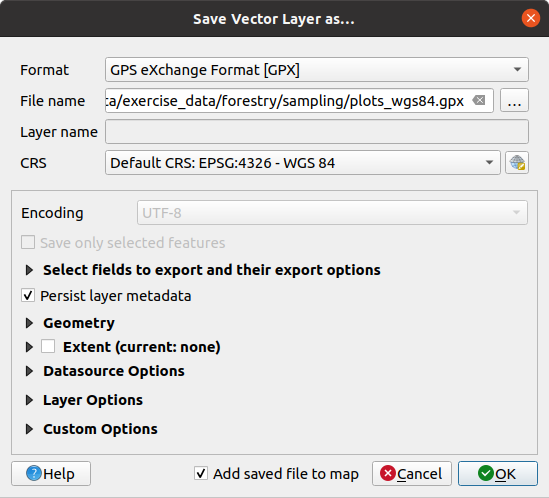

重要
翻訳は あなたが参加できる コミュニティの取り組みです。このページは現在 98.59% 翻訳されています。
14.5. レッスン: 体系的なサンプリングの設計
林分を表すポリゴンの集合は既にデジタイズしましたが、まだ森林についての情報を持っていません。その目的のために、この森林区域全体の目録作成の調査を設計し、そのパラメーターを推定できます。このレッスンでは、サンプリングプロットの体系的なセットを作成します。
森林目録を計画し始めるときは、目的、使用されるサンプルプロットの種類、目的を達成するために収集されるデータの種類を明確に定義することが重要です。それらは、個々の場合について森林管理目的のタイプに依存するでしょうし、誰か林業の知識を持つ人によって慎重に計画されなければなりません。このレッスンでは、体系的なサンプリングプロットの設計に基づいた理論的な目録を実装します。
このレッスンの目標： 森林区域を調査するために体系的なサンプリングプロットの設計を作成します。
14.5.1. 森林の目録を作成する
森林の目録を作成するには、それぞれ異なる目的や条件に合わせて、いくつかの方法があります。たとえば、森林の目録を作成する1つの非常に正確な方法は（樹種だけを考慮する場合）、森林を訪問し、すべての木とその特徴のリストを作成することです。ご想像できるように、これはいくつかの小さな領域または一部の特殊な状況を除けば、一般的には適用できません。
森林について知る最も一般的な方法は、森林をサンプリングすることです。つまり、森林のさまざまな場所で計測を行い、その情報を森林全体に一般化することです。これらの計測は、多くの場合、簡単に計測できる小さな森林区域である サンプルプロット で行われます。サンプルプロットは、どんなサイズ（たとえば、50 m2、0.5 ha）や形式（たとえば、円形、長方形、可変サイズ）にもでき、方法（たとえば、ランダム、体系的、線に沿って）もさまざまです。サンプルプロットのサイズ、形式、および場所は、通常、統計的、経済的、および実用的な考慮事項に従って決定されます。林業の知識がない方は このウィキペディアの記事 を読むことをお勧めします。
14.5.2. ★☆☆ （初級レベル） 理解しよう: 体系的サンプリングプロット設計を実装する
作業している森について管理者は、この森のためには体系的なサンプリング設計が最も適切であると判断し、またサンプルプロットとサンプリングラインとの間に80メートルの一定の距離が信頼性の高い結果が得られると判断しました（この場合では68％の確率で平均誤差+-5％）。可変サイズのプロットは、成長および成熟林分のため、この目録のための最も効果的な方法であると判断されているが、苗林分については4メートル固定の半径のプロットが使用されるでしょう。
実際には、後で野外チームによって使用されるポイントとしてサンプルプロットを表現する必要があるだけです：
前のレッスンからの
digitizing_2012.qgsプロジェクトを QGISで開きます。forest_stands_2012 以外のすべてのレイヤを削除します。
ここでプロジェクトを
forest_inventory.qgsとして保存してください
今、お互いに80メートル離れたポイントの長方形のグリッドを作成する必要があります:
 規則的な点群 を開きます。
規則的な点群 を開きます。作成範囲 フィールドの横にあるドロップダウンボタンを押して、 レイヤから計算 メニューから、 forest_stands_2012 を選択します。
点の間隔/数 の設定に、
80メートルを入力します。点の間隔を使う ボックスをチェックすると、この値がポイント間の距離を表していることを示します。
規則的点群 で、出力を
forestry\sampling\' フォルダの :file:`systematic_plots.shpとして保存します。アルゴリズムの終了後に出力ファイルを開く をチェックします。
実行 を押します。
注釈
提案された 規則的な点 は、選択されたポリゴン レイヤの範囲の左上隅から始まる体系的なポイントを作成します。この規則的な点にランダム性を追加したい場合は、0 から 80 (80 は点間の距離) の間でランダムに計算された数値を使用し、それからツールのダイアログで 隅からの初期嵌め込み（LH側） パラメータとして記述します。
このツールは、ポイントの長方形のグリッドを生成するために、林分レイヤの全体の範囲を使用していることに気づきます。しかし、お使いの森林区域の内側に実際にある点のみに関心があります（下の画像を参照）：

プロセシングツールボックスから
 を開きます。
を開きます。入力レイヤ に systematic_plots を選びます。
マスクレイヤ に forest_stands_2012 をセットします。
切り抜く（マスク） 結果を
forestry\sampling\フォルダにsystematic_plots_clip.shpとして保存します。アルゴリズムの終了後に出力ファイルを開く をチェックします。
実行 を押します。
これで、野外チームが設計されたサンプルプロットの場所に移動するために使用するポイントができました。野外作業のためにより便利になるように、これらのポイントをさらに準備できます。少なくとも、ポイントのために意味のある名前を追加し、GPSデバイスで使用できる形式にエクスポートする必要はあるでしょう。
まずは、サンプルプロットの命名から始めましょう。森林区域の内側のプロットの 属性テーブル を確認すると、 規則的点群 ツールで自動的に生成されたデフォルトの id フィールドがあることがわかります。ポイントにラベルを付けて地図上で確認し、サンプルプロットの命名の一部としてこれらの番号を使用できるかどうかを検討します:
systematic_plots_clipレイヤの ラベル を開きます。
ラベル を開きます。トップメニューを
単一定義 に変えます。値 項目で
id属性を選びます。バッファ タブを選び、テキストバッファを描画 をチェックし、バッファの 大きさ を
1にします。OK をクリックします。
ここで地図上のラベルを見てください。ポイントが作成され、最初に西から東、それから北から南へと番号付けられていることがわかります。再び属性テーブルを見れば、テーブル内の順序もそのパターンに従っていることがわかります。異なる方法でサンプルプロットに名前付けする理由がない限り、名前を西東/南北様式で名前付けすることは論理的な順序に従っており、良いオプションです。
それにしても、id フィールドの数値はあまりよくありません。p_1、p_2...``のような命名が良いでしょう。``systematic_plots_clip レイヤに新しい列を作成することができます:
systematic_plots_clipの 属性テーブル に移動します。 編集モードを有効にします。
編集モードを有効にします。 フィールド計算機 を開きます:
フィールド計算機 を開きます:新規フィールドを作成 をチェックします
出力する属性（フィールド）の名前 に
Plot_idと入力しますフィールド型 に テキスト(string) を設定します。
In the Expression field, write, copy or construct this formula
concat('P_', @row_number ). Remember that you can also double click on the elements inside the Function list. Theconcatfunction can be found under String and@row_numberis under the Variables group.
OK をクリックします。
編集モードを無効にし、変更を保存します。
これで、あなたにとって意味のあるプロット名を持つ新しい列ができました。systematic_plots_clip レイヤで、ラベル付けに使用しているフィールドを新しい Plot_id フィールドに変更します。

14.5.3. ★☆☆ （初級レベル） 理解しよう: GPX形式としてサンプルプロットを書き出す
野外チームは、おそらくGPSデバイスを使用して、あなたが計画したサンプルプロットの位置を特定することになるでしょう。次のステップは、作成したポイントをGPSが読み取れる形式にエクスポートすることです。QGISでは、点と線のベクタデータを GPS eXchange Format (GPX) で保存することができます。これは、ほとんどの専門ソフトウェアで読むことができる標準のGPSデータ形式です。データを保存する際にCRSを選択するのには注意が必要です:
systematic_plots_clipレイヤを右クリックし、 を選びます。 形式 で GPS交換フォーマット[GPX] を選択します。
出力を
forestry\sampling\フォルダにplots_wgs84.gpxという ファイル名 で保存します。CRS 中で 選択されたCRS を選択します。
EPSG:4326 - WGS 84 をブラウズします。
注釈
GPX 形式はこのCRSしか受け付けません。違うものを選ぶと、QGISはエラーを返しませんが、空のファイルができます。
OK をクリックします。
開いたダイアログで、
waypointsレイヤだけを選びます（レイヤの残りは空です）。
目録サンプルプロットは、ほとんどのGPSソフトウェアで管理できる標準形式になっています。野外チームは、サンプルプロットの位置をデバイスにアップロードできるようになりました。そのためには、各自のデバイスのソフトウェアと、保存した plots_wgs84.gpx ファイルを使用することになります。他の方法としては、 GPS Tools プラグインを使用することもできますが、その場合、特定のGPSデバイスで動作するようにツールを設定する必要があります。もしあなたが自分のデータで作業をしていて、このツールがどのように動作するかを確認したい場合は、QGISユーザーマニュアル の GPSデータの操作 のセクションで情報を得ることができます。
ここでQGISプロジェクトを保存します。
14.5.4. 結論
森林目録に使用する体系的なサンプリングの設計を作成する方法を簡単に見たところです。サンプリング設計の他のタイプを作成するには、QGIS内のさまざまなツールやスプレッドシートを使用したりスクリプトを書いてサンプルプロットの座標を計算することが入ってきますが、一般的な考え方は同じままになります。
14.5.5. 次は?
次のレッスンでは、野外チームが担当のサンプルプロットに到達するため使用している詳細地図を自動で作成するために、QGISの地図帳機能をどう使用するかを見ていきましょう。